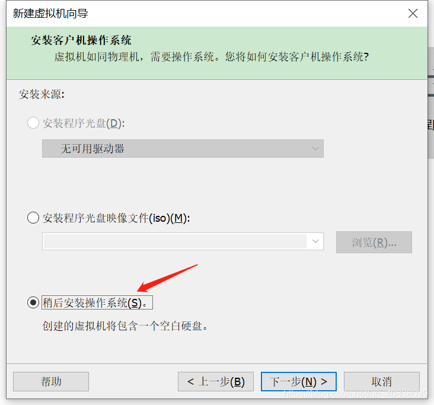
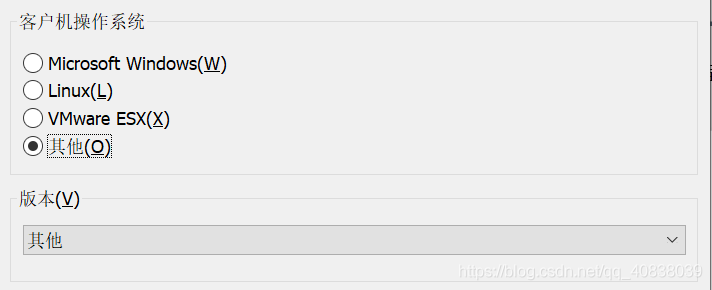
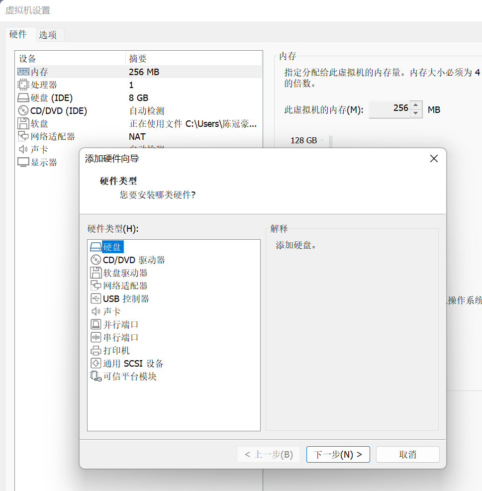
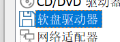
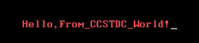
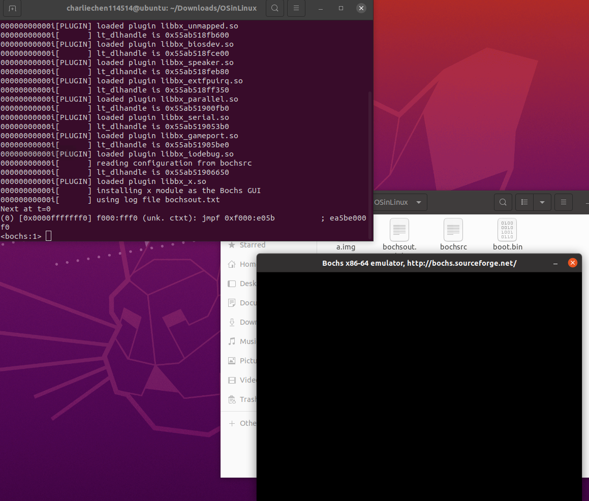
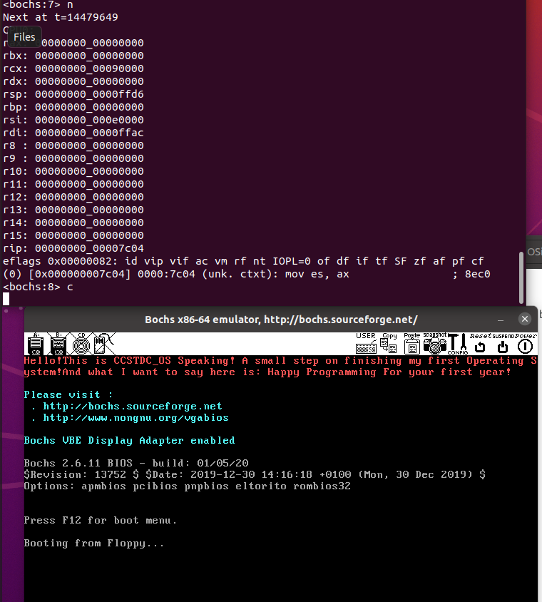

动手整一个操作系统玩玩（1）
操作系统实现（From Ogrange’S）
暑期书籍阅读Project
我们下面干一件很酷很酷的事情——
这是一段很有名（convinced）的ASM汇编代码
1 org 07c00h ; 告诉编译器程序加载到*7c00*处
2 mov ax, cs
3 mov ds, ax
4 mov es, ax
5 call DispStr ; 调用显示字符串例程
6 jmp $ ; 无限循环
7 DispStr:
8 mov ax, BootMessage
9 mov bp, ax ; *ES:BP =* 串地址
10 mov cx, 24 ; *CX =* 串长度
11 mov ax, 01301h ; *AH = 13, AL = 01h*
12 mov bx, 000ch ; 页号为*0 (BH = 0)* 黑底红字*(BL = 0Ch,*高亮*)*
13 mov dl, 0
14 int 10h ; *10h* 号中断
15 ret
16 BootMessage: db "Hello,From_CCSTDC_World!"
17 times 510 - ($-$$) db 0 ; 填充剩下的空间，使生成的二进制代码恰好为*512*字节
18 dw 0xaa55 ; 结束标志 好吧,做出一个假设——你不知道怎么处理汇编代码，那么，根据这本书的建议，你可以考虑去下载一个NASM汇编编译器，我们直接在Windows下的官网整出来一个就好了。当我们下载好了之后，转向点击exe文件（原谅我在Windows下干活），会自动弹出一个DOS窗口，把我们刚刚准备好的汇编文件——麻烦重命名成boot.asm（这个后缀表示的是这是一个汇编文件） 放到exe文件下方（嘿！你知道的！或者指定清楚全文件名，这里偷个懒）
nasm boot.asm -o boot.bin 我们就有了一个二进制文件。但是仅有次远远不够，对于我自己，我转战了Linux虚拟机（呃，不如先去了解一下怎么搞Linux虚拟机？if any questions…）在Linux终端，键入这个命令
dd if=boot.bin of=devfd0 bs=512 count=1Extension
*\*一、dd命令的解释****
dd：用指定大小的块拷贝一个文件，并在拷贝的同时进行指定的转换。
注意：指定数字的地方若以下列字符结尾，则乘以相应的数字：b=512；c=1；k=1024；w=2\参数注释：**
if=文件名：输入文件名，缺省为标准输入。即指定源文件。< if=input file >
of=文件名：输出文件名，缺省为标准输出。即指定目的文件。< of=output file >
ibs=bytes：一次读入bytes个字节，即指定一个块大小为bytes个字节。
obs=bytes：一次输出bytes个字节，即指定一个块大小为bytes个字节。
bs=bytes：同时设置读入/输出的块大小为bytes个字节。
\4. cbs=bytes：一次转换bytes个字节，即指定转换缓冲区大小。
\5. skip=blocks：从输入文件开头跳过blocks个块后再开始复制。
\6. seek=blocks：从输出文件开头跳过blocks个块后再开始复制。
注意：通常只用当输出文件是磁盘或磁带时才有效，即备份到磁盘或磁带时才有效。
\7. count=blocks：仅拷贝blocks个块，块大小等于ibs指定的字节数。
\8. conv=conversion：用指定的参数转换文件。
ascii：转换ebcdic为ascii
ebcdic：转换ascii为ebcdic
ibm：转换ascii为alternate ebcdic
block：把每一行转换为长度为cbs，不足部分用空格填充
unblock：使每一行的长度都为cbs，不足部分用空格填充
lcase：把大写字符转换为小写字符
ucase：把小写字符转换为大写字符
swab：交换输入的每对字节
noerror：出错时不停止
notrunc：不截短输出文件
sync：将每个输入块填充到ibs个字节，不足部分用空（NUL）字符补齐。
*\*二、dd应用实例****
\1.将本地的/dev/hdb整盘备份到/dev/hdd**
#dd if=/dev/hdb of=/dev/hdd
\2.将/dev/hdb全盘数据备份到指定路径的image文件**
#dd if=/dev/hdb of=/root/image
\3.将备份文件恢复到指定盘**
#dd if=/root/image of=/dev/hdb
\4.备份/dev/hdb全盘数据，并利用gzip工具进行压缩，保存到指定路径**
#dd if=/dev/hdb | gzip > /root/image.gz
\5.将压缩的备份文件恢复到指定盘**
#gzip -dc /root/image.gz | dd of=/dev/hdb
\6.备份与恢复MBR**
备份磁盘开始的512个字节大小的MBR信息到指定文件：
#dd if=/dev/hda of=/root/image count=1 bs=512
count=1指仅拷贝一个块；bs=512指块大小为512个字节。
恢复：
#dd if=/root/image of=/dev/had
将备份的MBR信息写到磁盘开始部分
\7.备份软盘**
#dd if=/dev/fd0 of=disk.img count=1 bs=1440k (即块大小为1.44M)
\8.拷贝内存内容到硬盘**
#dd if=/dev/mem of=/root/mem.bin bs=1024 (指定块大小为1k)
\9.拷贝光盘内容到指定文件夹，并保存为cd.iso文件**
#dd if=/dev/cdrom(hdc) of=/root/cd.iso
\10.增加swap分区文件大小**
第一步：创建一个大小为256M的文件：
#dd if=/dev/zero of=/swapfile bs=1024 count=262144
第二步：把这个文件变成swap文件：
#mkswap /swapfile
第三步：启用这个swap文件：
#swapon /swapfile
第四步：编辑/etc/fstab文件，使在每次开机时自动加载swap文件：
/swapfile swap swap default 0 0
\11.销毁磁盘数据**
#dd if=/dev/urandom of=/dev/hda1
注意：利用随机的数据填充硬盘，在某些必要的场合可以用来销毁数据。
\12.测试硬盘的读写速度**
#dd if=/dev/zero bs=1024 count=1000000 of=/root/1Gb.file
#dd if=/root/1Gb.file bs=64k | dd of=/dev/null
通过以上两个命令输出的命令执行时间，可以计算出硬盘的读、写速度。
\13.确定硬盘的最佳块大小：**
#dd if=/dev/zero bs=1024 count=1000000 of=/root/1Gb.file
#dd if=/dev/zero bs=2048 count=500000 of=/root/1Gb.file
#dd if=/dev/zero bs=4096 count=250000 of=/root/1Gb.file
#dd if=/dev/zero bs=8192 count=125000 of=/root/1Gb.file
通过比较以上命令输出中所显示的命令执行时间，即可确定系统最佳的块大小。
\14.修复硬盘：**
#dd if=/dev/sda of=/dev/sda 或dd if=/dev/hda of=/dev/hda
当硬盘较长时间(一年以上)放置不使用后，磁盘上会产生magnetic flux point，当磁头读到这些区域时会遇到困难，并可能导致I/O错误。当这种情况影响到硬盘的第一个扇区时，可能导致硬盘报废。上边的命令有可能使这些数 据起死回生。并且这个过程是安全、高效的。
\15.利用netcat远程备份**
#dd if=/dev/hda bs=16065b | netcat < targethost-IP > 1234
在源主机上执行此命令备份/dev/hda
#netcat -l -p 1234 | dd of=/dev/hdc bs=16065b
在目的主机上执行此命令来接收数据并写入/dev/hdc
#netcat -l -p 1234 | bzip2 > partition.img
#netcat -l -p 1234 | gzip > partition.img
以上两条指令是目的主机指令的变化分别采用bzip2、gzip对数据进行压缩，并将备份文件保存在当前目录。
\将一个很大的视频文件中的第i个字节的值改成0×41（也就是大写字母A的ASCII值）**
echo A | dd of=bigfile seek=$i bs=1 count=1 conv=notrunc
*\*三、/dev/null和/dev/zero的区别****
/dev/null，外号叫无底洞，你可以向它输出任何数据，它通吃，并且不会撑着！
/dev/zero，是一个输入设备，你可你用它来初始化文件。该设备无穷尽地提供0，可以使用任何你需要的数目——设备提供的要多的多。他可以用于向设备或文件写入字符串0。
/dev/null——它是空设备，也称为位桶（bit bucket）。任何写入它的输出都会被抛弃。如果不想让消息以标准输出显示或写入文件，那么可以将消息重定向到位桶。
#if=/dev/zero of=./test.txt bs=1k count=1
#ls –l
total 4
-rw-r–r– 1 oracle dba 1024 Jul 15 16:56 test.txt
#find / -name access_log 2>/dev/null
*\*3.1****使用/dev/null****
把/dev/null看作”黑洞”， 它等价于一个只写文件，所有写入它的内容都会永远丢失.，而尝试从它那儿读取内容则什么也读不到。然而， /dev/null对命令行和脚本都非常的有用
l 禁止标准输出
#cat $filename >/dev/null
文件内容丢失，而不会输出到标准输出.
l 禁止标准错误
#rm $badname 2>/dev/null
这样错误信息[标准错误]就被丢到太平洋去了
l 禁止标准输出和标准错误的输出
#cat $filename 2>/dev/null >/dev/null
如果”$filename”不存在，将不会有任何错误信息提示；如果”$filename”存在， 文件的内容不会打印到标准输出。
因此，上面的代码根本不会输出任何信息。当只想测试命令的退出码而不想有任何输出时非常有用。
#cat $filename &>/dev/null
这样其实也可以， 由 Baris Cicek 指出
\自动清空日志文件的内容**
l Deleting contents of a file, but preserving the file itself, with all attendant permissions(from Example 2-1 and Example 2-3):
#cat /dev/null > /var/log/messages
# : > /var/log/messages 有同样的效果， 但不会产生新的进程.（因为:是内建的）
#cat /dev/null > /var/log/wtmp
\隐藏cookie而不再使用**
特别适合处理这些由商业Web站点发送的讨厌的”cookies”
#if [ -f ~/.netscape/cookies ] # 如果存在则删除.
#then
#rm -f ~/.netscape/cookies
#fi
#ln -s /dev/null ~/.netscape/cookies
现在所有的cookies都会丢入黑洞而不会保存在磁盘上了.
*\*3.2****使用/dev/zero****
像/dev/null一样， /dev/zero也是一个伪文件， 但它实际上产生连续不断的null的流（二进制的零流，而不是ASCII型的）。 写入它的输出会丢失不见， 而从/dev/zero读出一连串的null也比较困难， 虽然这也能通过od或一个十六进制编辑器来做到。 /dev/zero主要的用处是用来创建一个指定长度用于初始化的空文件，就像临时交换文件。
\用/dev/zero创建一个交换临时文件**
#!/bin/bash
\# 创建一个交换文件.
ROOT_UID=0 # Root 用户的 $UID 是 0.
E_WRONG_USER=65 # 不是 root?
FILE=/swap
BLOCKSIZE=1024
MINBLOCKS=40
SUCCESS=0
\# 这个脚本必须用root来运行.
if [ "$UID" -ne "$ROOT_UID" ]
then
echo; echo "You must be root to run this script."; echo
exit $E_WRONG_USER
fi
blocks=${1:-$MINBLOCKS} # 如果命令行没有指定，
\#+ 则设置为默认的40块.
\# 上面这句等同如：
\# ————————————————–
\# if [ -n "$1" ]
\# then
\# blocks=$1
\# else
\# blocks=$MINBLOCKS
\# fi
\# ————————————————–
if [ "$blocks" -lt $MINBLOCKS ]
then
blocks=$MINBLOCKS # 最少要有 40 个块长.
fi
echo "Creating swap file of size $blocks blocks (KB)."
dd if=/dev/zero of=$FILE bs=$BLOCKSIZE count=$blocks # 把零写入文件.
mkswap $FILE $blocks # 将此文件建为交换文件（或称交换分区）.
swapon $FILE # 激活交换文件.
echo "Swap file created and activated."
exit $SUCCESS 关于 /dev/zero 的另一个应用是为特定的目的而用零去填充一个指定大小的文件， 如挂载一个文件系统到环回设备 （loopback device）或”安全地” 删除一个文件
\例子创建ramdisk**
#!/bin/bash
\# ramdisk.sh
\# "ramdisk"是系统RAM内存的一段，
\#+ 它可以被当成是一个文件系统来操作.
\# 它的优点是存取速度非常快 (包括读和写).
\# 缺点: 易失性, 当计算机重启或关机时会丢失数据.
\#+ 会减少系统可用的RAM.
\# 10 # 那么ramdisk有什么作用呢?
\# 保存一个较大的数据集在ramdisk, 比如一张表或字典,
\#+ 这样可以加速数据查询, 因为在内存里查找比在磁盘里查找快得多.
E_NON_ROOT_USER=70 # 必须用root来运行.
ROOTUSER_NAME=root
MOUNTPT=/mnt/ramdisk
SIZE=2000 # 2K 个块 (可以合适的做修改)
BLOCKSIZE=1024 # 每块有1K (1024 byte) 的大小
DEVICE=/dev/ram0 # 第一个 ram 设备
username=`id -nu`
if [ "$username" != "$ROOTUSER_NAME" ]
then
echo "Must be root to run "`basename $0`"."
exit $E_NON_ROOT_USER
fi
if [ ! -d "$MOUNTPT" ] # 测试挂载点是否已经存在了,
then #+ 如果这个脚本已经运行了好几次了就不会再建这个目录了
mkdir $MOUNTPT #+ 因为前面已经建立了.
fi
dd if=/dev/zero of=$DEVICE count=$SIZE bs=$BLOCKSIZE
\# 把RAM设备的内容用零填充.
\# 为何需要这么做?
mke2fs $DEVICE # 在RAM设备上创建一个ext2文件系统.
mount $DEVICE $MOUNTPT # 挂载设备.
chmod 777 $MOUNTPT # 使普通用户也可以存取这个ramdisk.
\# 但是, 只能由root来缷载它.
echo ""$MOUNTPT" now available for use."
\# 现在 ramdisk 即使普通用户也可以用来存取文件了.
\# 注意, ramdisk是易失的, 所以当计算机系统重启或关机时ramdisk里的内容会消失.
\# 拷贝所有你想保存文件到一个常规的磁盘目录下.
\# 重启之后, 运行这个脚本再次建立起一个 ramdisk.
\# 仅重新加载 /mnt/ramdisk 而没有其他的步骤将不会正确工作.
\# 如果加以改进, 这个脚本可以放在 /etc/rc.d/rc.local,
\#+ 以使系统启动时能自动设立一个ramdisk.
\# 这样很合适速度要求高的数据库服务器.
exit 0Extension Finished && move on
我们拿到了一个boot.img映像文件。现在，指定虚拟机一个
这里通过虚拟机VMware进行测试写好的镜像系统。
首先新建一个虚拟机，暂时不用添加系统，选择稍后安装操作系统，如下图：

图4
然后，系统类型可随便选择，笔者这里都选择其他，如下图：

图5
之后的虚拟机名字、位置选择，可自行选择。完成之后，会有如下图6界面；
点击编辑虚拟机设置，会出现如图7界面，由于方框中没有软盘驱动器的选项，我们可以选择添加；

图7
在添加硬件向导里选择软盘驱动器，如下图8所示；

添加之后，在软盘那里选择使用软盘映像文件，把我们保存的软盘镜像:肯定的是boot.img添加进去，之后就可运行虚拟机了。
3、运行虚拟机：

好吧，还是很酷的。虽然，还是看起来不咋地。但是我们的征程不会停下来
你可能还没有从刚刚的兴奋中走出来，可是我不得不告诉你，实际上，你刚刚所完成的并不是一个完整的操作系统，而仅仅是一个最最简单的引导扇区（Boot Sector）。然而不管我们完成的是什么，至少，它是直接在裸机上运行的，不依赖于任何其他软件，所以，这和我们平时所编写的应用软件有本质的区别。它不是操作系统，但已经具备了操作系统的一个特性。
我们知道，当计算机电源被打开时，它会先进行加电自检（POST），然后寻找启动盘，如果是选择从软盘启动，计算机就会检查软盘的0面0磁道1扇区，如果发现它以0xAA55 (9)结束，则BIOS认为它是一个引导扇区。当然，一个正确的引导扇区除了以0xAA55结束之外，还应该包含一段少于512字节的执行码。
好了，一旦BIOS发现了引导扇区，就会将这512字节的内容装载到内存地址0000:7c00处，然后跳转到0000:7c00处将控制权彻底交给这段引导代码。到此为止，计算机不再由BIOS中固有的程序来控制，而变成由操作系统的一部分来控制。
现在，你可能明白了为什么在那段代码的第一行会出现“org0 7c00”这样的代码。没错，这行代码就是告诉编译器，将来我们的这段程序要被加载到内存偏移地址0x7c00处。好了，下面将对代码的其他部分进行详细解释。
在Linux中开启虚拟机中虚拟机的模式
是的！我们下一个bochs虚拟机，在我们的Linux操作系统下！
sudo apt-get install vgabios bochs bochs-x bximage 现在启动一下这个虚拟机配置程序
bximage======================================================================================
bximage
Disk Image Creation Tool for Bochs
$Id: bximage.c,v 1.32 2006/06/16 07:29:33 vruppert Exp $
======================================================================================
Do you want to create a floppy disk image or a hard disk image?
Please type hd or fd. [hd] fd ↩ // Enter fd
Choose the size of floppy disk image to create, in megabytes.
Please type 0.16, 0.18, 0.32, 0.36, 0.72, 1.2, 1.44, 1.68, 1.72, or 2.88.
[1.44] ↩ // default choice
I will create a floppy image with
cyl=80
heads=2
sectors per track=18
total sectors=2880
total bytes=1474560
What should I name the image?
[a.img] ↩ // name the default
33
Writing: [ ] Done.
I wrote 1474560 bytes to a.img.
The following line should appear in your bochsrc:
floppya: image="a.img", status=inserted 现在我们创建了一个空的映像文件，然后，使用
dd if=boot.bin of=a.img bs=512 count=1 conv=notrunc 完成编写
然后，开一个目录：把我们写好了的映像文件跟一个空白的配置文件放在一起
###############################################################
# Configuration file for Bochs
###############################################################
# how much memory the emulated machine will have
megs: 32
# filename of ROM images
romimage: file=/usr/share/bochs/BIOS-bochs-latest
vgaromimage: file=/usr/share/vgabios/vgabios.bin
# what disk images will be used
floppya: 1_44=a.img, status=inserted
# choose the boot disk.
boot: floppy
# where do we send log messages?
log: bochsout.txt
# disable the mouse
mouse: enabled=0
# enable key mapping, using US layout as default.
keyboard: keymap=/usr/share/bochs/keymaps/x11-pc-us.map
# what makes ot different is that the keyboard_mapping key is abolished and deprecated 把这一串东西复制进去,确保这些文件都在路径下！（检查一下，不然报出各种奇怪的错误！）
现在，启用配置文件二开一个虚拟机：
bochs -f bochsrc （对了，注意就是这个文件没有后缀名！这很重要）

虚拟机启动了！现在是debug模式，所以我们可以一步步打断点的调试内核。
========================================================================
Bochs x86 Emulator 2.6.11
Built from SVN snapshot on January 5, 2020
Timestamp: Sun Jan 5 08:36:00 CET 2020
========================================================================
00000000000i[ ] LTDL_LIBRARY_PATH not set. using compile time default '/usr/lib/bochs/plugins'
00000000000i[ ] BXSHARE not set. using compile time default '/usr/share/bochs'
00000000000i[ ] lt_dlhandle is 0x55ab518f9fe0
00000000000i[PLUGIN] loaded plugin libbx_unmapped.so
00000000000i[ ] lt_dlhandle is 0x55ab518fb600
00000000000i[PLUGIN] loaded plugin libbx_biosdev.so
00000000000i[ ] lt_dlhandle is 0x55ab518fce00
00000000000i[PLUGIN] loaded plugin libbx_speaker.so
00000000000i[ ] lt_dlhandle is 0x55ab518feb80
00000000000i[PLUGIN] loaded plugin libbx_extfpuirq.so
00000000000i[ ] lt_dlhandle is 0x55ab518ff350
00000000000i[PLUGIN] loaded plugin libbx_parallel.so
00000000000i[ ] lt_dlhandle is 0x55ab51900fb0
00000000000i[PLUGIN] loaded plugin libbx_serial.so
00000000000i[ ] lt_dlhandle is 0x55ab519053b0
00000000000i[PLUGIN] loaded plugin libbx_gameport.so
00000000000i[ ] lt_dlhandle is 0x55ab51905be0
00000000000i[PLUGIN] loaded plugin libbx_iodebug.so
00000000000i[ ] reading configuration from bochsrc
00000000000i[ ] lt_dlhandle is 0x55ab51906650
00000000000i[PLUGIN] loaded plugin libbx_x.so
00000000000i[ ] installing x module as the Bochs GUI
00000000000i[ ] using log file bochsout.txt
Next at t=0
(0) [0x0000fffffff0] f000:fff0 (unk. ctxt): jmpf 0xf000:e05b ; ea5be000f0
<bochs:1> b 0x7c00
<bochs:2> c
(0) Breakpoint 1, 0x0000000000007c00 in ?? ()
Next at t=14479647
(0) [0x000000007c00] 0000:7c00 (unk. ctxt): mov ax, cs ; 8cc8
<bochs:3> info cpu
CPU0:
rax: 00000000_0000aa55
rbx: 00000000_00000000
rcx: 00000000_00090000
rdx: 00000000_00000000
rsp: 00000000_0000ffd6
rbp: 00000000_00000000
rsi: 00000000_000e0000
rdi: 00000000_0000ffac
r8 : 00000000_00000000
r9 : 00000000_00000000
r10: 00000000_00000000
r11: 00000000_00000000
r12: 00000000_00000000
r13: 00000000_00000000
r14: 00000000_00000000
r15: 00000000_00000000
rip: 00000000_00007c00
eflags 0x00000082: id vip vif ac vm rf nt IOPL=0 of df if tf SF zf af pf cf
status word: 0x0000: b c3 TOS0 c2 c1 c0 es sf pe ue oe ze de ie
control word: 0x0040: inf RC_NEAREST PC_32 pm um om zm dm im
tag word: 0x5555
operand: 0x0000
fip: 0x0000000000000000
fcs: 0x0000
fdp: 0x0000000000000000
fds: 0x0000
=>FP0 ST0(0): raw 0x0000:0000000000000000 (0.0000000000) (ZERO)
FP1 ST1(0): raw 0x0000:0000000000000000 (0.0000000000) (ZERO)
FP2 ST2(0): raw 0x0000:0000000000000000 (0.0000000000) (ZERO)
FP3 ST3(0): raw 0x0000:0000000000000000 (0.0000000000) (ZERO)
FP4 ST4(0): raw 0x0000:0000000000000000 (0.0000000000) (ZERO)
FP5 ST5(0): raw 0x0000:0000000000000000 (0.0000000000) (ZERO)
FP6 ST6(0): raw 0x0000:0000000000000000 (0.0000000000) (ZERO)
FP7 ST7(0): raw 0x0000:0000000000000000 (0.0000000000) (ZERO)
MM[0]: 00000000_00000000
MM[1]: 00000000_00000000
MM[2]: 00000000_00000000
MM[3]: 00000000_00000000
MM[4]: 00000000_00000000
MM[5]: 00000000_00000000
MM[6]: 00000000_00000000
MM[7]: 00000000_00000000
The CPU doesn't support AVX state !
<bochs:4> x /64xb 0x7c00
[bochs]:
0x0000000000007c00 <bogus+ 0>: 0x8c 0xc8 0x8e 0xd8 0x8e 0xc0 0xe8 0x02
0x0000000000007c08 <bogus+ 8>: 0x00 0xeb 0xfe 0xb8 0x1e 0x7c 0x89 0xc5
0x0000000000007c10 <bogus+ 16>: 0xb9 0x9f 0x00 0xb8 0x01 0x13 0xbb 0x0c
0x0000000000007c18 <bogus+ 24>: 0x00 0xb2 0x00 0xcd 0x10 0xc3 0x48 0x65
0x0000000000007c20 <bogus+ 32>: 0x6c 0x6c 0x6f 0x21 0x54 0x68 0x69 0x73
0x0000000000007c28 <bogus+ 40>: 0x20 0x69 0x73 0x20 0x43 0x43 0x53 0x54
0x0000000000007c30 <bogus+ 48>: 0x44 0x43 0x5f 0x4f 0x53 0x20 0x53 0x70
0x0000000000007c38 <bogus+ 56>: 0x65 0x61 0x6b 0x69 0x6e 0x67 0x21 0x20
<bochs:5> n
Next at t=14479648
(0) [0x000000007c02] 0000:7c02 (unk. ctxt): mov ds, ax ; 8ed8
<bochs:6> trace-reg on
Register-Tracing enabled for CPU0
<bochs:7> n
Next at t=14479649
CPU0:
rax: 00000000_00000000
rbx: 00000000_00000000
rcx: 00000000_00090000
rdx: 00000000_00000000
rsp: 00000000_0000ffd6
rbp: 00000000_00000000
rsi: 00000000_000e0000
rdi: 00000000_0000ffac
r8 : 00000000_00000000
r9 : 00000000_00000000
r10: 00000000_00000000
r11: 00000000_00000000
r12: 00000000_00000000
r13: 00000000_00000000
r14: 00000000_00000000
r15: 00000000_00000000
rip: 00000000_00007c04
eflags 0x00000082: id vip vif ac vm rf nt IOPL=0 of df if tf SF zf af pf cf
(0) [0x000000007c04] 0000:7c04 (unk. ctxt): mov es, ax ; 8ec0
<bochs:8> c<bochs:1> 这就是在提示我们要输入指令，我们的第一条指令就是
<bochs:1> b 0x7c00 这是在给程序打断点。一旦执行到这里（也就是执行点的地址）就停下来让我们查看。
其他的指令这里看一看：
| 行为 | 指令 | 举例 |
|---|---|---|
| 在某物理地址设置断点 | b addr | b 0x30400 |
| 显示当前所有断点信息 | info break | info break |
| 继续执行，直到遇上断点 | c | c |
| 单步执行 | s | s |
| 单步执行，遇到函数则跳过 | n | n |
| 查看寄存器信息 | info cpu r fp sreg creg | info cpu r fp sreg creg |
| 查看堆栈 | print-stack | print-stack |
| 查看内存物理地址内容 | xp /nuf addr | xp /40bx 0x9013e |
| 查看线性地址内容 | x /nuf addr | x /40bx 0x13e |
| 反汇编一段内存 | u start end | u 0x30400 0x3040D |
| 反汇编执行的每一条指令 | trace-on | trace-on |
| 每执行一条指令就打印CPU信息 | trace-reg | trace-reg on |
在查看寄存器信息中，r为通用寄存器，fp应该就是fp寄存器吧，sreg为段寄存器，creg为控制寄存器。
在xp和x命令中，nuf表示指定打印多少信息。
其实bochs调试跟gdb挺像的~
